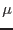

XMM-Newton Science Analysis System
emframes (emframes-5.10) [xmmsas_20170112_1337-16.0.0]
Description
emframes
analyzes the frames (auxiliary) file, adding four columns
(a quality flag, the dead time fraction, the time and
the GATTI value), performing various checks and computing the
specific (to the CCD node) Good Time Intervals.
The flag value allows to identify why the frame was flagged
(using binary coding).
emframes
does not normally modify the events file
(except in the case of frame renumbering as explained below).
Events belonging to frames flagged as bad are themselves
flagged for rejection by CUT_GTI in emevents.
emframes
may be applied as is to slew data.
emframes
may renumber the frames in the
case of long telemetry drops. Frame renumbering allows to compute
the GATTI value correctly, and to flag the events with truncated energy
(as REJECTED_BY_GATTI) in emevents. Those flagged
events are the best way to detect proton flares.
Frame renumbering requires altering the events file as well.
When it is launched on an auxiliary file (straight from the ODF),
emframes
needs to access the ODF directory where
the data comes from. This should be specified through the SAS_ODF
environment variable, or the generic odf parameter
on the command line. In that context, emframes
also needs
an events file (odfeventset parameter) to define the CCD/node
and set the OAL state.
In that case emframes
writes to the output frames file keywords
filled using values taken from the summary file via OAL calls.
It also copies the FILTER keyword to the events file (for the CAL)
if the events file was modified (newevent=Y or frame renumbering).
If the events file was not modified the FILTER keyword is not copied
to avoid the overhead of rewriting the full file.
On the other hand, emframes
launched on its own output
does not need an ODF directory nor an events file. All functions
described below may be called that way except FRAMES.
emframes
calls (in order) the following subroutines, all of which
can be individually switched off:
- FRAMES.
The time transmitted in the ODF is still
in FTCOARSE/FTFINE form
(FTFINE is in units of 40 s).
FRAMES starts by converting that in seconds
(double precision real) and adding the sequencing delays,
creating a TIME column.
FRAMES computes the precise frame integration time
and writes it into the FRMTIME keyword if it is significantly
different from the original FRMTIME value.
It adds the (constant) time offset to all frame times after wrap-around
in the event of a long exposure (
 32767 s), and converts the times
into standard XMM times (running from 01/01/1998).
32767 s), and converts the times
into standard XMM times (running from 01/01/1998).
In TIMING mode the times are corrected for the delay necessary
to transfer the data through the 600 rows in the framestore area,
and to transfer the data to the framestore area, assuming
the vertical binning is 101.
By default the source position is taken from the target coordinates
(RA_OBJ, DEC_OBJ).
This may be overridden by the user setting the source position
manually via the parameters srcra and srcdec.
If no RA_OBJ, DEC_OBJ keyword is present and
srcra/dec are not set
the source is assumed to be at the centre of the CCD.
The NPIXEL column is recomputed to give
the number of pixels above threshold per cycle (in the auxiliary file
NPIXEL gives the integrated number of pixels above threshold
since the beginning of the exposure).
Finally, FRAMES tests whether the data was obtained with GATTI on or off
and writes a GATTI_ON keyword to reflect that.
- Frame renumbering.
The frame numbers are first scanned for regular increase, and a
permutation array is created if some subset of frame numbers needs to
be sorted. If a forward jump
is detected then the time difference between the frames across the jump
is examined. As the frame number is known only modulo 16 in the telemetry,
a multiple of 16 frames may need to be inserted. How many times 16 frames
is known by dividing the time difference by the frame integration time.
This (-1) gives the most likely value of (and an upper bound to)
the true number of missing frames (each extended frame reduces that
number). If the interruption was due to counting mode, and the counting
mode file was entered via the countingset parameter, then
the number of missing frames is taken directly from the corresponding
entry in that file.
The number of missed frames is added to the FRAME columns
in the frames and events files after the jump.
If a frame number is repeated then FRAMES attempts to find one of the set
with the expected time value; failing that, to find one of the set that
might represent a cycling of the time; and failing that the frame with
the smallest increase in time available. This ``good frame'' is marked
with flag_mulfid and retained in the output data, while the other frames
in the set are marked with flag_badfid and rejected.
Frames with extended (n times) integration time are detected
by looking at the time difference between successive frames
(n times the frame integration time for extended frames).
A statistical test on NPIXEL (comparing the local value
with the overall distribution in the file) is performed to tell
extended frames from undetected telemetry drops (integer multiple
of 16 frames). NPIXEL (total number of pixels above threshold)
must be larger in an extended frame.
One row per frame (including dummies for missing frames) is created in output.
This allows direct access by emevents. A dummy first row
is always added (giving the estimated start time of the first frame).
The first and last frames are flagged (they are usually not reliable).
- FLAG_HK.
Outside normal operating conditions the instrument performances would
presumably be degraded, possibly so much so that the following operations
do not even make sense.
Some of the later tasks (CCDBKG in emenergy)
build integrated images over the whole exposure, from which the frames
judged bad by tabgtigen
must be excluded.
All frames whose start and end times are not inside
the same good time interval (defined by tabgtigen) are flagged as bad.
- FIFO
tests all the frames for a possible FIFO overflow flag
and flags them as bad.
- VALID
checks the number of events in the events file corresponding
to a given frame versus the NVALID field in the frames file
and flags as bad incomplete frames with the wrong number of events.
In that case NVALID is set to the number of events in the events file.
- CR_DEAD.
Every cosmic ray interaction with a CCD prevents a genuine X-ray from
being detected there. This amounts to a source of dead time, which
should be quite small on average (
 1%). The number
of pixels affected can be readily calculated by subtracting the number
of pixels above threshold in the true events (known from their pattern,
excluding ``cosmic-ray'' patterns)
from the total number of pixels above threshold (NPIXEL)
in the frame. The number of events below the lower EMDH
threshold (NBELOW) should also be subtracted (those are mostly
single noise excursions and incur no loss of efficiency).
This allows to check the coherence of NPIXEL with the other data,
since the subtraction must always remain positive. If it is not
then the frame is flagged for rejection.
1%). The number
of pixels affected can be readily calculated by subtracting the number
of pixels above threshold in the true events (known from their pattern,
excluding ``cosmic-ray'' patterns)
from the total number of pixels above threshold (NPIXEL)
in the frame. The number of events below the lower EMDH
threshold (NBELOW) should also be subtracted (those are mostly
single noise excursions and incur no loss of efficiency).
This allows to check the coherence of NPIXEL with the other data,
since the subtraction must always remain positive. If it is not
then the frame is flagged for rejection.
Since all pixels neighbouring
cosmic ray events are also lost, a statistical factor
(COSMICSIZE field in the XMM_MISCDATA CCF file) must be applied.
Another statistical correction must be applied because only part of
the CCD surface is in view of the sky (because it is partly outside
the field of view or because the edges are masked by other CCDs above),
and because the dark part sees cosmic rays differently
(COSMICOUTOVERIN field in the XMM_MISCDATA CCF file).
The list of ``cosmic-ray'' patterns is derived from the patterns' definition
by looking for all non-isolated patterns (where pixels around the central
event are not necessarily below threshold) and
is written into keywords CRPATi.
In Compressed Timing mode where the pattern number is not transmitted
to the ground it is taken to be 0 (single event, most likely value).
As the true number of pixels per event can only be larger,
this means the dead time is slightly overestimated in that mode.
- MAKE_GTI
forms good time intervals for the current CCD, excluding all frames flagged
as bad by FRAMES, FIFO, VALID or CR_DEAD (but not those flagged by FLAG_HK).
It finally computes and writes the LIVETIME and ONTIME keywords
corresponding to the total good time corrected or not for dead time,
and rejecting the bad frames and those flagged by FLAG_HK.
- PUT_GATTI
recomputes
the GATTI value along its periodic triangle variation from 0 to 255
and back, using the GATTI flag as a marker, into GATTIVAL.
This prepares SP_GATTI
of emevents, which allows to check how the GATTI correction works.
If the number of frames is less than 510 (this is often true for calibrations),
no GATTI flag appears and this technique is not applicable.
In that case the GATTI value is set to the input row number
(best guess).
In free run modes (Timing or free run Window) the GATTI is not used
and PUT_GATTI just sets GATTIVAL to 0.
Recapitulation of flag definitions (flags below 64 are just warnings):
|
Value |
Meaning |
| 1 |
Extended frame integration time |
| 2 |
Telemetry drop before this frame |
| 4 |
Frame kept from a sequence of duplicated data with increasing IDs |
| 8 |
No attitude available (Timing mode only) |
| 16 |
Frame thought to contain good data, whose ID number was duplicated |
| 64 |
Frame thought to contain bad data, whose ID number was duplicated |
| 128 |
NPIXEL too small or NABOVE too large |
| 256 |
Frame is not inside Good Time Interval from Housekeeping |
| 512 |
FIFO overflow |
| 1024 |
Number of events in the events file is not NVALID |
| 2048 |
Time negative or aberrant leap in time tag |
| 4096 |
Missing frame inserted after detection of telemetry drop |
| 8192 |
First or last frame |
| 16384 |
Time decreased unexpectedly |
XMM-Newton SOC/SSC -- 2017-01-12